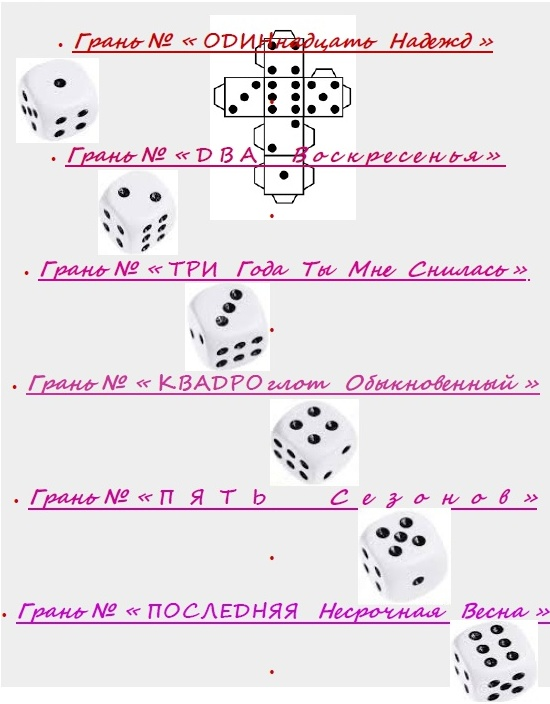

«Кубатура Шара»
Содержание
1
Грань № « ОДИНнадцать Надежд »
1.1
«ВОСПОМИНАНИЯ О ЛЕТЕ» (1981)
1.2
«ВОЗРАСТ – 33» (1981)
1.3
«НАШЕЙ ПАМЯТИ ТУМАН» (1981)
1.4
«ПОЛОН ВЗГЛЯД ЕГО ПЕЧАЛИ» (1982)
1.5
«В ВОСПОМИНАНИЯХ РАСТАЕТ» (1982)
1.6
«КАК ДИВНЫЙ СОН» (1982)
1.7
«ФУТБОЛ ИГРОЮ ОСТАЁТСЯ» (1982)
2
Грань № « ДВА Воскресенья»
2.1
Пролог: “6 марта 1988 г., воскресенье (день) (Киев, ещё зима)
2.2
« 23 февраля 1988 г., вторник, слякоть »
2.3
« 6 марта 1988 г., воскресенье, вечер, Тарасовка, холод »
2.4
« 7 марта 1988 г. понедельник, мороз »
2.5
« 8 марта 1988 г., вторник, снег »
2.6
« 9 марта 1988 г., среда, солнечно »
2.7
« 10 марта 1988 г., четверг, переменная облачость »
2.8
« 11 марта 1988 г., пятница, всё тает… »
2.9
«12 марта 1988г, суббота, 1-ый час ночи, пахнет весной…»
2.10
« 13 марта 1988 г, воскресенье, 3-ый час ночи, весна! »
3
Грань № « ТРИ Года Ты Мне Снилась »
3.1
«У РАЗБИТОГО КОРЫТА» (1986)
3.2
«ТЯГА К ЧЕЛОВЕКУ» (1985)
3.3
ВДВОЁМ В МЕЛОДИИ ОДНОЙ» (1987)
3.4
«НЕ ПЛОХАЯ ИГРА» (1986)
3.5
«КАК Я СКУЧАЮ…» (1987)
3.6
«ПРОСТО ТАК – НЕ ХОЧУ» (1987)
3.7
«ВЕРЮ, НАДЕЮСЬ И…» (1987)
3.8
«ЛЮБОВЬ – НЕ УМЕРЛА» (1985)
3.9
«МЫ ОБА НЕПРАВЫ…»
3.10
«СТАНУ ДУМАТЬ О ТЕБЕ…» (1985)
3.11
«МОИ СТИХИ – САМООБМАН»
3.12
ПЕЧАЛЬ РОЖДАЕТ АВГУСТ» (1985)
3.13
«ИЗ ПРОШЛОГО ПИШУ…»
3.14
«ВСЁ ЛЮБИТЬ – С ТОБОЙ ЛЕГКО» (1985)
3.15
«НЕРАЗДЕЛЁННОЮ ЛЮБОВЬЮ»
3.16
«ПО ПИСЬМАМ И СТИХАМ» (1987)
3.17
«ЧТО Я ЕЩЁ МОГУ?» (1986)
3.18
«ПРОШЛОЕ — НАСТОЯЩЕЕ…»
3.19
«НЕТ ТЕБЯ В ЗВЁЗДНОЙ ТИШИНЕ» (1985)
3.20
«С ТОЙ СТОРОНЫ ДРУГОЙ ПЛАНЕТЫ»
3.21
«СУДЬБА СМЕЯЛАСЬ?» (1987)
4
Грань № « КВАДРОглот Обыкновенный »
4.1
« Lascia ch’io pianga » (1575)
4.2
Dein blaues Auge (1854)
4.3
« Le Charme» (1879)
4.4
« МОЯ — ПОСЛЕДНЯЯ ? » (1987)
4.5
« ОХРАНЯЯ НАШИ СНЫ » (1987)
4.6
« ПРОСТО ТАК — НЕ ХОЧУ » (1987)
4.7
« Я ЗАБЫЛ »
4.8
«ОТ МЕНЯ К ТЕБЕ» (1983)
4.9
“ВСЁ ВИЖУ НАСКВОЗЬ” (1983)
4.10
« ВЧЕРА » (1983)
4.11
«У ЧЕЛОВЕЧЕСКОЙ ДУШИ» (1983)
4.12
“THE TREMBLING LEAF” (1986)
4.13
“БУДУ ЖДАТЬ” (1936)
4.14
“ОСТРОВ ЗМЕИНЫЙ” (1986)
4.14.1
“GUERNESEY” (1855-1870)
4.15
«ДОЖДЬ НАМ КАРТЫ СПУТАЛ» (2016)
4.16
“GIVE ME YOUR HAND” (1982)
4.17
« IN HATRED AND LOVE » (1983)
4.18
“ПОСЛЕДНИЙ СОВЕТ”
5
Грань № « ПЯТЬ Сезонов»
5.1
ОГОНЬ НА ВЕТРУ
5.2
ЯГОДА И КУСТ
5.3
ШОПЕН ИЛИ БЕТХОВЕН?
5.4
РАЗНИЦА
5.5
А НУЖНО ЛЬ ЗВОНИТЬ?
5.6
НОТНЫЕ ТЕТРАДИ
5.7
ЗДРАВСТВУЙ, ГРУСТЬ
5.8
ЖИЗНЬ ТОЛЬКО НАЧИНАЕТСЯ
5.9
Нотные тетради (Версия 2.0)
6
Грань № « ПОСЛЕДНЯЯ Несрочная Весна »
6.1
« ДЛЯ ПИСЕМ И ГАЗЕТ »
6.2
« УЧЕНИЕ КЕПЛЕРА — ВСЕСИЛЬНО ?
6.3
« УЧИТЕЛЬСКИЙ ХЛЕБ »
6.4
« КТО НОСИЛ РВАНЬЁ ? »
6.5
« КОНЦЕРТ N° 2 »
6.6
« ТРИУМФАЛЬНАЯ АРКА »
6.7
« ДО ВОСТРЕБОВАНИЯ »
6.8
« ЧЕМ ЗАКОНЧИЛСЯ СЕРИАЛ ? »
6.9
« ВОЗВРАТИТЬСЯ В ТУ НОЧЬ »
Статистический анализ текста
Andrey Gorodnichy © 1981-2018
«Кубатура Шара»
«Кубатура Шара»
Андрей Городничий
Содержание

Версия для печати:
PDF
,
EPUB
.
Online:
https://bookdown.org/gorodnichy/andre
.